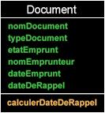
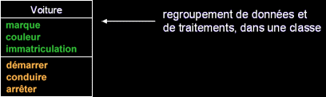
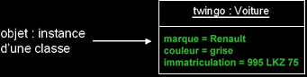
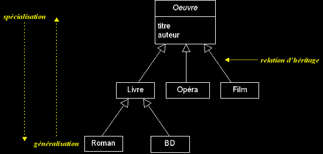
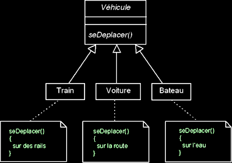

|
|
|
Approche fonctionnelle vs. approche objet (suite...)
q
Récapitulons...
En résumé : centraliser les données d'un type et les traitements associés, dans une même unité physique, permet de limiter les points de maintenance dans le code et facilite l'accès à l'information en cas d'évolution du logiciel :

q Objet ?
Les modifications que nous avons apporté à notre logiciel de gestion de médiathèque, nous ont amené à transformer ce qui était à l'origine une structure de données, manipulée par des fonctions, en une entité autonome, qui regroupe un ensemble de propriétés cohérentes et de traitements associés. Une telle entité s'appelle... un objet et constitue le concept fondateur de l'approche du même nom !
- Un objet est une entité aux frontières précises qui possède une identité (un nom).
- Un ensemble d'attributs caractérise l'état de l'objet.
- Un ensemble d'opérations (méthodes) en définissent le comportement.
- Un objet est une instance de classe (une occurrence d'un type abstrait).
- Une classe est un type de données abstrait, caractérisé par des propriétés (attributs et méthodes) communes à des objets et permettant de créer des objets possédant ces propriétés.
Exemple :


Quels sont les autres concepts importants de l'approche objet ?
q Héritage (et polymorphisme)
- L'héritage est un mécanisme de transmission des propriétés d'une classe (ses attributs et méthodes) vers une sous-classe.
- Une classe peut être spécialisée en d'autres classes, afin d'y ajouter des caractéristiques spécifiques ou d'en adapter certaines.
- Plusieurs classes peuvent être généralisées en une classe qui les factorise, afin de regrouper les caractéristiques communes d'un ensemble de classes.
- La spécialisation et la généralisation permettent de construire des hiérarchies de classes. L'héritage peut être simple ou multiple.
- L'héritage évite la duplication et encourage la réutilisation.
- Le polymorphisme représente la faculté d'une méthode à pouvoir s'appliquer à des objets de classes différentes.
- Le polymorphisme augmente la généricité du code.
Exemple d'une hiérarchie de classes :
Polymorphisme, exemple :
Vehicule convoi[3] = {
Train("TGV"),
Voiture("twingo"),
Bateau("Titanic")
};
for (int i = 0; i < 3; i++)
{
convoi[i].seDeplacer();
}

|
|
|